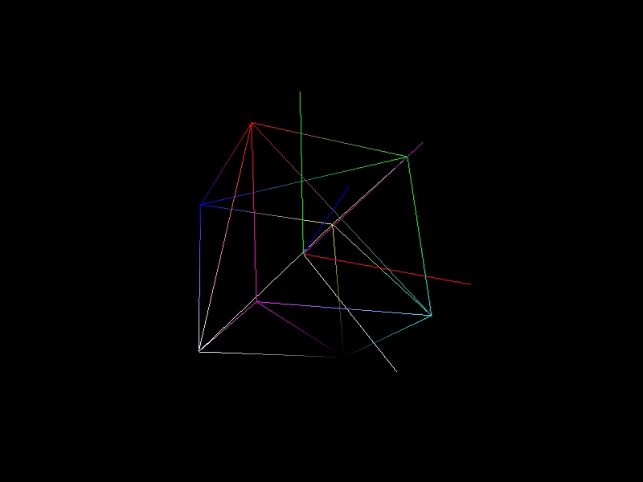
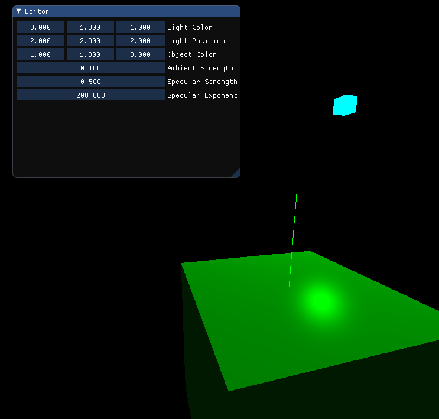

Quaternions, No GLM, and Graphics Review
It's been a month since my last post. Despite saying that I would be doing a post every Monday, it's pretty obvious that I have not been doing that. When I started, I wasn't sure if I would be sticking to that rigid schedule of posting on Mondays. After a short trial run, I don't think I will be continuing that. I would rather focus on continuing to work on Varkor and other projects and only write posts when I am ready to do so. That being said, I think a month is too long considering how much has happened, so I think every two weeks might be a better target.
I finally have my own implementation of quaternions working. I removed glm from Varkor and the features I was using from glm have been replaced with my own math code. A simple debug drawing interface was created for quickly drawing lines. A fat chunk of the code that was residing in the main file (main.cc) has been organized into new files depending on the purpose. Framerate limiting is now possible using VSync or by simply sleeping the main thread until it is time to begin the next frame. ImGui was added to the project in order to quickly test the implementation of graphics features and, last but not least, I began reviewing graphics again by going through the tutorials on Learn OpenGL. I've gone through these in the past but more on that later.
Quaternions and Custom Math
In my last blog post, I mentioned I was reviewing complex numbers in order to learn about and implement quaternions. I did quite a lot on this front and thanks to resources like 3blue1brown & Ben Eater's quaternion series it was absolutely possible. After this study, it became clear to me how quaternions are simply an extension of the complex number space. Though I believe I have a decent understanding of them that allowed me to create a working implementation, I don't feel that my intuition is good enough for me to write an in-depth explanation about them. I would like to do that in the future because there could be more easy-to-access information available on quaternions and how they are used for rotations specifically, but now is not the time. Here is a little gif that shows off the working quaternion implementation though (holy shit why does this gif suck so much ass? It's also kind of cool though so I won't change it).

When I was creating the quaternion implementation, I had to go through the process of taking that quaternion and transforming it into a 4x4 matrix that could be applied to vertices on a model. This lead me on a little bit of a rabbit hole about how to structure a math library. Like I said earlier, I have removed glm from the project. I was working towards replacing glm with my own math for a while, but this was only completed recently. Additionally, my math library is very small because it only contains the math I am currently using. As time goes on and I require new math features, it will need to be expanded.
I want to talk about how I decided to structure my math code. I ended up using a technique that I have never used before and am still uncertain about whether the structure is beneficial or not. I am not even sure if it was necessary for me to make this structural change but I did anyway. I saw no harm in giving it a try and validating if it's actually a good idea (but so far I really like it).
A month ago, the math library looked a little like this.
namespace Math {
template<typename T, unsigned int N>
struct Matrix
{
T mD[N][N];
T* Data();
const T* CData() const;
T* operator[](int row);
const T* operator[](int row) const;
Matrix<T, N> operator*(const Matrix<T, N>& other) const;
Matrix<T, N>& operator*=(const Matrix<T, N>& other);
void Zero();
void Identity();
/*...*/
};
/*...*/
} // namespace Math
This is the definition for a matrix class that stores a NxN matrix with values of type T. Say we need a function that creates a 4x4 matrix specifically. This is exactly the kind of function I needed: a function that takes a quaternion and generates a 4x4 rotation matrix. How could we add that function to this definition specifically for 4x4 matrices? My first approach was to use a class template specialization, but I very quickly realized a con to this approach. Let me explain.
Look at this simple template class.
template<typename T>
struct Example
{
public:
void FuncA();
void FuncB();
T value;
};
template<typename T>
void Example<T>::FuncA()
{
std::cout << "FuncA: " << value << std::endl;
}
template<typename T>
void Example<T>::FuncB()
{
std::cout << "FuncB: " << value << std::endl;
}
Nothing about this Example class is special. We have a template class that can be created with any type the user of the class desires. What if we needed a new member function that could only be used if the desired type was a float? We could then do something like this:
template<>
class Example<float>
{
public:
void FuncC();
float member;
};
void Example<float>::FuncC()
{
std::cout << "FuncC Float: " << member << std::endl;
}
With this template class specialization, we can create instances of the Example class where the desired type is float and we get access to the FuncC() function. This would allow us to do all of the following:
int main(void)
{
Example<int> intObject;
intObject.FuncA();
intObject.FuncB();
Example<float> floatObject;
floatObject.FuncC();
}
This does work, but it comes with a disadvantage. The Example<float> instance can't use the FuncA() and FuncB() member functions that are defined in the generic template class.
floatObject.FuncA();
If we were to call FuncA() using our current defintion of Example<float>, we would receive a compiler error because FuncA() does not exist within the definition of Example<float>. If we want to access those functions, we need to add them to the class defintion and define them again for the Example<float> class like so:
template<>
class Example<float>
{
public:
void FuncA();
void FuncB();
void FuncC();
float member;
};
void Example<float>::FuncA()
{
std::cout << "FuncA Float: " << member << std::endl;
}
void Example<float>::FuncB()
{
std::cout << "FuncB Float: " << member << std::endl;
}
void Example<float>::FuncC()
{
std::cout << "FuncC Float: " << member << std::endl;
}
Only now can we call the FuncA() and FuncB() member functions on an instance of the Example<float> class. Btw, if we didn't include the function defintions, we would just get linker errors because the functions would be declared but not defined.
We need a function that generates a 4x4 matrix given a quaternion. If we used the technique described above with template class specialization, we would need to create new function definitions for each of the member functions that exist in the generic class, just like we had to redefine FuncA() and FuncB() above. That's a huge pain in the ass. If a member function is not defined in a class specialization but is defined in the generic version, it would be nice if the generic member function was used instead. Obviously, this isn't possible because I wouldn't be talking about it if it was. In order to get around this, I changed the definition of the matrix class to look like this:
namespace Math {
template<typename T, unsigned int N>
struct Matrix
{
T mD[N][N];
T* Data();
const T* CData() const;
T* operator[](int row);
const T* operator[](int row) const;
};
template<typename T, unsigned int N>
Matrix<T, N> operator*(const Matrix<T, N>& a, const Matrix<T, N>& b);
template<typename T, unsigned int N>
Matrix<T, N>& operator*=(Matrix<T, N>& a, const Matrix<T, N>& b);
template<typename T, unsigned int N>
void Zero(Matrix<T, N>* matrix);
template<typename T, unsigned int N>
void Identity(Matrix<T, N>* matrix);
/*...*/
} // namespace Math
Now the matrix class is very simple. The only things contained in the definition are the things that need to be there. This includes the data mD and any operator overloads that must be within a class definition, like operator[]. Data() and CData() are also there so a pointer can be retrieved with matrix.Data(). I just like the syntax and redefining and maintaing these functions for specializations is trivial. Besides personal preference, there is nothing that justifies the Data() and CData() functions.
All of the other functions that used to be member functions are now outside of the class defintion and take a pointer to a matrix as if it were the this pointer. The advantage of this is that these functions can be used with any specialization of the Matrix class without the specialization needing to explicitly declare and define them. For example, I have a specialization for 4x4 float matrices. I did not create a new Zero(...) function for this specialization because I can still use the generic version like so:
Matrix<float, 4> matrix;
Math::Zero(&matrix);
If there is a need to make this function faster or change its behavior for 4x4 float matrices, then there is nothing stopping me from creating a Zero(Matrix<float, 4>*) function for this specific kind of matrix. Once that's done, the new specialized function will be used instead of the generic version. Here's a small demo of this with some simpler code:
template<typename T>
struct Example
{
T data;
};
template<typename T>
void FuncA(Example<T>* genericObject)
{
std::cout << "FuncA generic: " << genericObject->data << std::endl;
}
template<typename T>
void FuncB(Example<T>* genericObject)
{
std::cout << "FuncB generic: " << genericObject->data << std::endl;
}
template<>
struct Example<float>
{
float data;
};
void FuncB(Example<float>* floatObject)
{
std::cout << "FuncB float: " << floatObject->data << std::endl;
}
In this example, the generic version of the Example struct has two functions defined underneath it, both of which take a pointer to an Example instance. Below that, there is a specialization of the struct for floats. The only difference is that there is no FuncA(Example<float>* floatObject) function. That doesn't mean we can't use FuncA() though. Since we have a generic version, it will still compile and link if we pass an Example<float> instance to FuncA().
int main(void)
{
Example<int> intObject;
FuncA(&intObject);
FuncB(&intObject);
Example<float> floatObject;
FuncA(&floatObject);
FuncB(&floatObject);
}
/*
-Output-
FuncA generic: 4194432
FuncB generic: 4194432
FuncA generic: 4.95912e-039
FuncB float: 4.95912e-039
*/
The whole entire reason we started breaking this down was because we wanted to create a single, non-generic function that generates a 4x4 matrix given a quaternion. With this structure, that can be added easily without needing to redefine the generic functions we still want to use.
void FuncC(Example<float>* floatObject)
{
std::cout << "FuncC float: " << floatObject->data << std::endl;
}
Continuing with the previous example, FuncC() is a new function that takes an Example<float> instance pointer specifically. There is no FuncC() function defined for the generic Example though. This means that passing an Example<float> pointer to the function will compile, but passing any other type won't.
/* compiles and runs */
FuncC(&floatObject);
/* does neither of those dreaded things */
FuncC(&intObject);
And that's it. By using this structure, we can easily add a new function specifically for 4x4 float matrices without needing to redefine anything else. I was also looking at glm's code while considering this structure change and learned that it employs the same technique for a lot of functions. The class definitions aren't nearly as small as mine, but I guess it all comes down to how many functions one is willing to rewrite for every type they need and how performance critical they are. Here is the function signature to finally end discussion about this topic.
void Rotate(Matrix<float, 4>* matrix, const Quaternion& rotation);
Framerate Limiting
Another exciting thing that I tackled this month was framerate limiting. I actually got to learn some pretty cool stuff while digging in on this topic. It's a little bit sad too, but that's just because I am picky and had hoped for better.
To implement sofware based framerate limiting, we need a target frame time first. Take 60fps as an example. To run at 60fps, each frame needs to be 1/60 seconds long. This is a frame time of around 16.6ms. Since we now know how long a single frame should take, the next thing we need is the amount of time passed during the creation of the frame. To do this, we store the time at the beginning of the frame and then when all of the processing needed for a frame is over, we can find out how much time has passed. With the amount of time passed and a target frame time, we have everything we need to do software-based framerate limiting. We find out how much time is left in the frame by finding the difference between the target frame time and the current frame time and then we just sleep the thread for this amount of time.
Now, there is a small detail about this "sleep" thing. On Windows, sleep periods are always provided in milliseconds. I did not come across anything that allowed for higher precision while digging around. I do not fully know the reason for this, but I have a hunch that it has something to do with how process scheduling is handled. Because of this, getting a consistent 60fps isn't typical. When a target of 60fps is used, the actual framerate will be around 59 fps. This is because the sleep function will usually result in frame times that are 17ms long, but the frames can sometimes be 16ms too. It all depends on which millisecond the process returns from the sleep function and continues running.
Oh and by the way, I happened to be digging around the UnrealEngine repository and stumbled across some code that implements framerate limiting. It is cursed by the same problem of millisecond precision. So if you're ever wondering why you can never maintain a constant 60 fps using software-based framerate limiting, your answer is "milliseconds aren't fucking good enough."
Disclaimer: I saw some resources claiming that higher precision is possible on linux. When I start working on linux compatibility, I will take a look into this more, but as of right now, I have no clue.
Graphics Review
The other thing I have begun to work on and the last thing I want to write about is graphics review. When I was working on my first engine for a student project at DigiPen, I was very passionate about graphics and handled the graphics code for the engine. This was in 2D though, so I never got fully go into the realm of 3D graphics except for one class where I learned about and implemented some basic and more advanced features. It has been a damn long time since I have done graphics now, but I am extremely excited to hop back into it. It's certainly not all brand new as I still carry a good deal of the intuition gathered from my old projects: how phong lighting works, what a normal map does, skyboxes, and other things.
At the moment, the extent of my review has been up to phong lighting. I am going through the tutorials on learnopengl.com. These are the same tutorials I read through years ago, and now I am going through the ones I feel I need a refresher on for a solid foundation in graphics and to add some basic graphics features to Varkor.
I don't want to talk more about this because there's nothing that I feel compelled to write about yet, but here's a little image of what things currently look like.

Wrapping Up
I don't think my next blog post will be a month away. There are topics that I could have talked about here but I didn't because a lot has happened in the last month. This post already feels like the longest one I have done. At the moment I am thinking two weeks, but we'll see how much happens until then and if that's an acceptable time frame.
The next things on the agenda are continuing graphics review and some core engine work. By core engine work, I mean creating a system for game objects and game object components. I already have some ideas about what this is going to look like, but it's all still very much in my head and hasn't turned into any code yet.
Thanks for reading.